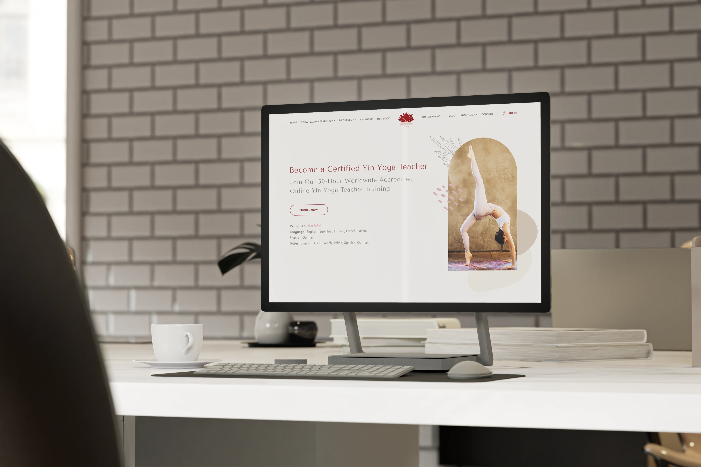
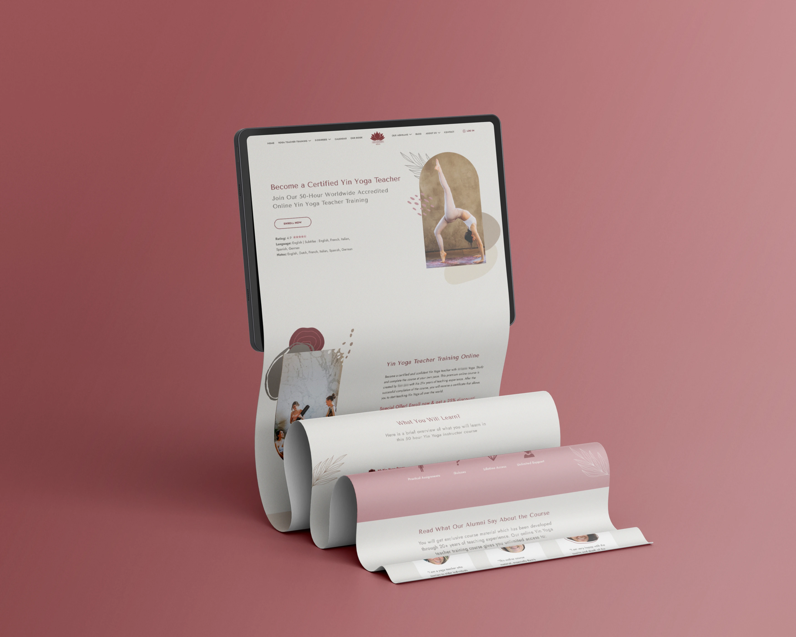
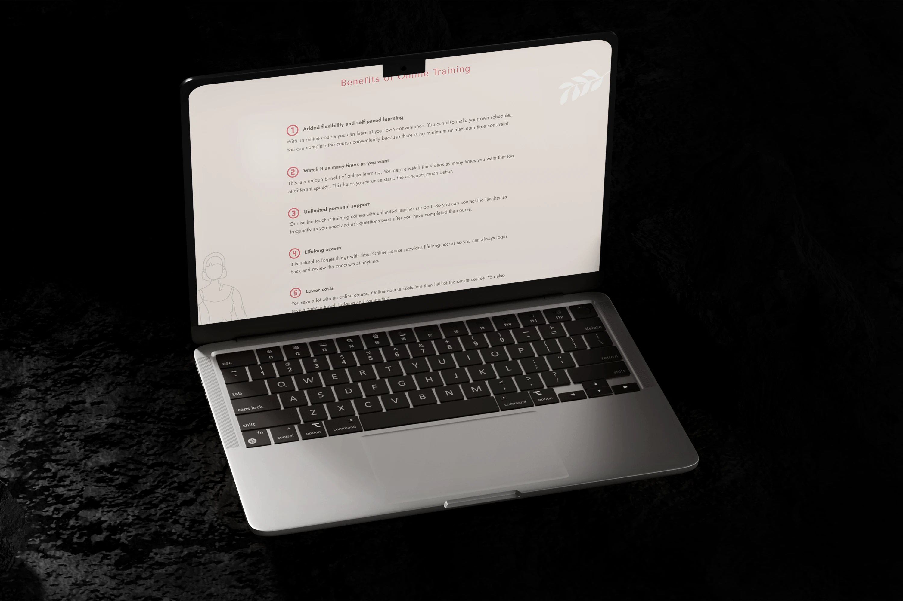

INTRO
The goal of the landing page redesign for an online yoga training platform was to modernise the visual appearance, maintaining the original structure but aligning the page more closely with the brand’s values and audience expectations. The brand desired a site with a contemporary look, user-friendly navigation, and the ability to convey values of wellness and serenity. With only a colour palette and the official logo provided, there was significant creative freedom to redefine the design and align it with the brand’s vision.
The goal of the landing page redesign for an online yoga training platform was to modernise the visual appearance, maintaining the original structure but aligning the page more closely with the brand’s values and audience expectations. The brand desired a site with a contemporary look, user-friendly navigation, and the ability to convey values of wellness and serenity. With only a colour palette and the official logo provided, there was significant creative freedom to redefine the design and align it with the brand’s vision.

THE CHALLENGE
The main challenge was transforming a visually chaotic layout filled with low-resolution images into a clean and harmonious design. Without a defined visual identity, there was a risk of losing stylistic coherence and failing to communicate the values of serenity and professionalism associated with yoga. To overcome these obstacles, a thorough competitor analysis was conducted to identify dominant trends in the wellness and minimalist design sectors, integrating these guidelines with targeted typographic and colour choices.
The main challenge was transforming a visually chaotic layout filled with low-resolution images into a clean and harmonious design. Without a defined visual identity, there was a risk of losing stylistic coherence and failing to communicate the values of serenity and professionalism associated with yoga. To overcome these obstacles, a thorough competitor analysis was conducted to identify dominant trends in the wellness and minimalist design sectors, integrating these guidelines with targeted typographic and colour choices.

THE SOLUTION
The redesign process began with comprehensive research into design styles used by key competitors in the wellness and yoga sectors, identifying trends that included elegant sans-serif fonts, a neutral colour palette, and simple yet harmonious layouts that incorporated nature-inspired graphic elements. The selection of two sans-serif fonts — Tenor Sans for headings and Jost for descriptive texts — was made to ensure visual coherence and improve readability, while also conveying a sense of lightness. The original low-quality photographs were significantly reduced, replaced with high-quality stock images that were optimised and adapted to the overall design style. Finally, the creation of custom organic vector elements helped provide the page with a unique and serene identity.
The redesign process began with comprehensive research into design styles used by key competitors in the wellness and yoga sectors, identifying trends that included elegant sans-serif fonts, a neutral colour palette, and simple yet harmonious layouts that incorporated nature-inspired graphic elements. The selection of two sans-serif fonts — Tenor Sans for headings and Jost for descriptive texts — was made to ensure visual coherence and improve readability, while also conveying a sense of lightness. The original low-quality photographs were significantly reduced, replaced with high-quality stock images that were optimised and adapted to the overall design style. Finally, the creation of custom organic vector elements helped provide the page with a unique and serene identity.

RESULT
The landing page redesign transformed the site’s appearance, providing a modern and professional visual identity in line with the focus on wellness. The feedback was extremely positive: the renewed design was praised for its visual coherence and its ability to make navigation smoother and more intuitive. The strategic use of high-quality images and custom graphic elements enhanced the user experience, reflecting the platform’s aesthetics and values.
The landing page redesign transformed the site’s appearance, providing a modern and professional visual identity in line with the focus on wellness. The feedback was extremely positive: the renewed design was praised for its visual coherence and its ability to make navigation smoother and more intuitive. The strategic use of high-quality images and custom graphic elements enhanced the user experience, reflecting the platform’s aesthetics and values.